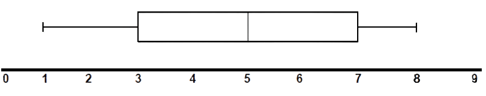
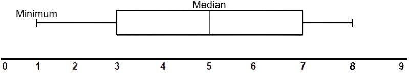

Box Plots
Introduction
Box plots are graphical images that take data to show its distribution among its values. A box plot has five elements, the minimum, the lower quartile, the median, the upper quartile, and the maximum. All of these values help create a box plot that looks like this…
Median
The median is the line in the middle of the box…

The median of this box plot is 5. The median is the center number in the set of numbers but sometimes the median is not in the middle and is placed to the left or right, towards the quartiles.

Minimum
The minimum is the straight line on the left of the box plot, it’s the smallest number in the data (set of numbers).

Lower Quartile
The lower quartile is the number where 25% of the numbers are smaller than. 75% of the values are above the lower quartile…

Upper Quartile
The upper quartile is the number where 75% of the numbers are smaller than. Only a quarter of the values are bigger than the upper quartile…

Maximum
The maximum is the biggest number in the set of numbers. All numbers are below it…
 Now that all the elements are known. We can start plotting a set of numbers like this one…
Now that all the elements are known. We can start plotting a set of numbers like this one…
1, 1, 2, 3, 5, 7, 10, 12
We can see the smallest and biggest numbers which are 1 and 12…
Now to find the lower and upper quartiles, we can use a formula that can pinpoint the value that can be those values…

Lower and Upper Quartile Formulas
L.Q = n + 14th term
U.Q = 3 *n + 14th term
n is the amount of numbers (NOT THE SUM OF NUMBERS)
In the example there are 8 numbers...
L.Q = 8 + 14 = 9/4 = 2.25th term - 3rd term
U.Q = 3 * 8 + 14 = 27/4 = 6.75th term - 7th term
You always round up when you get a decimal to find the lower and upper quartile
The Lower Quartile is the 3rd number and the Upper Quartile is the 7th term…
 The median can be found by adding the two numbers in the middle since the amount of numbers is even…
The median can be found by adding the two numbers in the middle since the amount of numbers is even…
3 + 5 = 8
Then we divide the sum by 2.
8/2 = 4
The median is 4...
 And the box plot is complete.
And the box plot is complete.
Done? Here are other Links
Back to Main Page
Back to Informational
If you are seeing this, your clock is missing a ding-dong
If you are seeing this, your calender needs a pin or two.